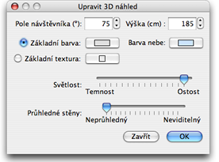

| Úprava 3D náhledu | |||
V programu lze pøepínat mezi dvìma úhly pohledu ve 3D náhledu, jsou to 3D náhled > Pohled z vý¹ky a 3D náhled > Virtuální prohlídka.
VPohledu z vý¹ky je vá¹ projekt ve 3D náhledu zobrazován trojdimenzionálním pohledem z nejvy¹¹ího pohledu náhledu.
V tomto módu pohledu mù¾ete pohybem my¹i vlevo èi vpravo (pøi neustálém dr¾ení levého tla¹ítka my¹i) toèit projektem kolem jeho vertikální osy ; pohybem my¹i nahoru a dolu (opìt neustále dr¾íte levé tlaèítko my¹i) otáèíte projekt kolem jeho horizontální osy ; otáèením rolovacího tlaèítka my¹i ovlivòujete zvìt¹ování èi zmen¹ování vzdálenosti 3D náhledu. V módu Virtuální prohlídka vidíte umístìní virtuálního náv¹tìvníka na plánu. Jeho umístìní a ve¹keré pohyby jsou automaticky promítány do 3D náhledu. Virtuálního náv¹tìvníka ovlivòujete na plánu tøemi indikátory.
|


|
Pohybme my¹i mù¾ete tedy virtuálním náv¹tìvníkem pohybovat vlevo, vpravo, dopøedu, vzad a mìnit úhel pohledu nahoru a dolu. Stisknete-li levé tlaèítko my¹i nad daným indikátorem uká¾e se vám pomocník zobrazující hodnoty úhlù pohledu. Dal¹í nastavení 3D náhledu je mo¾né upravit v menu 3D náhled > Upravit ....  V menu 3D náhledu, lze mìnit náv¹tìvníkùv úhel pohledu, jeho vý¹ku, barvu a textury nebe a podlahy a také ostrost svìtla èi prùhlednost stìn. |
|